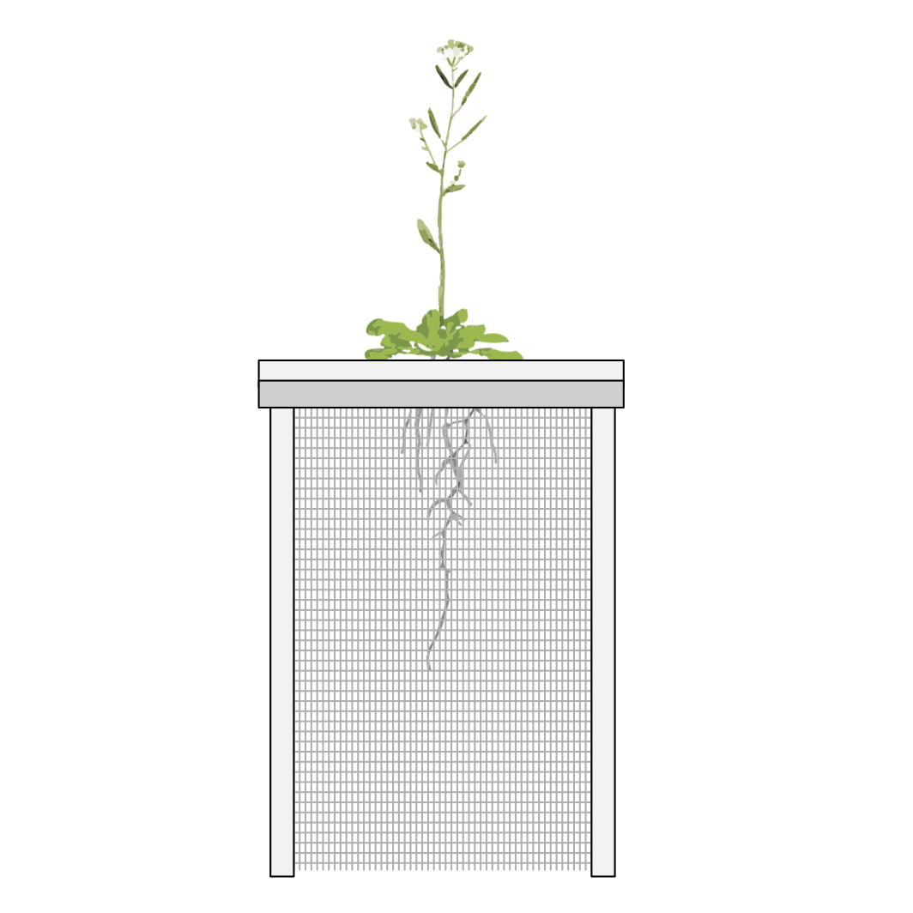

Script and blueprints for the Rhizoponic setup
The rhizoponics setup allows to simultaneously characterise the RSA and shoot development from seedling to adult stages, i.e. from seed to seed. This system offers the advantages of hydroponics such as control of root environment and easy access to the roots for measurements or sampling. Being completely movable and low cost, it can be used in controlled cabinets.

This repository contains all the digital files related to the rhizoponics setup. These include:
If you use the setup in your lab, please cite us as: